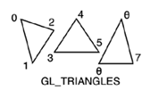

oguz81
Published first 13.03.2022
This is a little tutorial for making forced pendulum with C++ and OpenGL. You can look into the GitHub repository for source code here.
Prerequistes
C++, OpenGL, Differential Equations, Runge-Kutta methods -or generally numerical methods for ordinary differential equations.
This is a little tutorial for making a forced damped pendulum with C++ and OpenGL. The pendulum is affected by a external driving force and a damping constant. The method for solving the differential equation is fourth-order Runge-Kutta.
OpenGL version 3.30.
The differential equations of forced damped pendulum are
\begin{align*}
\frac{d\theta}{dt}&= \omega
\end{align*}
\begin{align*}
\omega '&= -\frac{g}{r}sin\theta + \frac{-b}{mR^2}\omega+ \frac{A}{mR^2}cos\omega t
\end{align*}
θ : angle
ω : angular velocity
g : gravity
R : length of rod
b : damping (friction) constant
m : mass of pendulum
A : amplitude of driving force
k : constant related to frequency of driving force
t : time
Runge-Kutta methods are some of methods to solve ordinary differential equations. We used fourth-order Runge-Kutta method.
Assume that we have a first order differential equation \begin{equation} y'=f(x,y) \end{equation} with the initial condition y(x0)=y0. If \begin{equation} y_n '=f(x_n,y_n) \end{equation} then \begin{equation} y_{n+1} = y_n+\frac{1}{6}(k_1 + 2k_2 + 2k_3 + k_4) . \end{equation} and \begin{align*} k_1 &= hf(x_n , y_n)\\ k_2 &= hf(x_n + \frac{1}{2}h , y_n + \frac{1}{2}k_1)\\ k_3 &= hf(x_n + \frac{1}{2}h , y_n+ \frac{1}{2}k_2)\\ k_4 &= hf(x_n + h , y_n + k_3)\\ \end{align*} h : step length
A pendulum is a system which has second order differential equation but this system can be written as two coupled first order differential equations which are able to be solved by numerical methods. If there are two differential equations in a system, then Runge-Kutta method changes a bit. \begin{align} y' &= f(x,y,z) = z\\ y'' &= g(x,y,z) = z' \end{align} Initial conditions are \begin{align*} y(x_0) &= y_0\\ y'(x_0) &= z_0 \end{align*} Solutions of equations above are \begin{align} y_{n+1} &= y_n+\frac{1}{6}(k_1 + 2k_2 + 2k_3 + k_4)\\ z_{n+1} &= z_n+\frac{1}{6}(l_1 + 2l_2 + 2l_3 + l_4) \end{align} and \begin{align*} k_1 & = hf(x_n, y_n, z_n)\\ l_1 & = hg(x_n, y_n, z_n)\\ k_2 & = hf(x_n + \frac{1}{2}h, y_n + \frac{1}{2}k_1, z_n + \frac{1}{2}l_1)\\ l_2 & = hg(x_n + \frac{1}{2}h, y_n + \frac{1}{2}k_1, z_n + \frac{1}{2}l_1)\\ k_3 & = hf(x_n + \frac{1}{2}h, y_n + \frac{1}{2}k_2, z_n + \frac{1}{2}l_2)\\ l_3 & = hg(x_n + \frac{1}{2}h, y_n + \frac{1}{2}k_2, z_n + \frac{1}{2}l_2)\\ k_4 & = hf(x_n + h, y_n + k_3, z_n + l_3)\\ l_4 & = hg(x_n + h, y_n + k_3, z_n + l_3) \end{align*}
Before solving the differential equation, let's draw a pendulum in OpenGL.
First, we will draw pendulum's ball. This is a circle, so we need to draw a circle. We use GL_TRIANGLES, which is one of OpenGL primitives. GL_TRIANGLES needs three vertices to draw a triangle.

We need to draw 360 triangles around a point, which is center of the circle. A triangle has three vertices and one vertex has two coordinates. So, we will have $$360\times3 = 1080$$ vertices and $$1080\times 2 = 2160$$ array elements. GL_TRIANGLES draws a triangle starting from first corner to third one. If we put first, fourth, seventh(n+3)... corners to the same point, these 360 triangles create a filled circle.
void drawCircle(float array[]){
int corner_one, corner_two, corner_three;//corners of triangles. GL_TRIANGLES starts to draw counterclockwise.
corner_one = -6;
corner_two = -4;
corner_three = -2;
float radius = 0.1f;
for(int angle = 1; angle <= 360; angle ++){
corner_one = corner_one + 6;
corner_two = corner_two + 6;
corner_three = corner_three + 6;
array[corner_one] = 0.0f;
array[corner_one + 1] = 0.0f;
array[corner_two] = radius * cos((angle -1) * 3.1416 / 180);
array[corner_two + 1] = radius * sin((angle -1) * 3.1416 / 180);
array[corner_three] = radius * cos((angle) * 3.1416 / 180);
array[corner_three + 1] = radius * sin((angle) * 3.1416 / 180);
}
}
We have corner_one, corner_two, corner_three variables. These are our corner vertices. We start them six step behind to avoid core dumped error at the end of the loop(If they start as corner_one = 0, corner_two = 2, corner_three = 4; the function tries to access some array members that bigger than 2160 and it causes core dumped error).
In OpenGL, vertex coordinates are stored sequentially. Therefore we assign vertex coordinates of a corner as array[corner_one] and array[corner_one +1]. We also have to add '6' to corner vertices in every tour for assigning next vertices to the array.
corner_one, corner_two and corner_three are considered as x coordinates of vertices. So, they get values which are calculated with cosine. corner_one +1, corner_two +1 and corner_three +1 are considered as y coordinates and they get values calculated with sine.
After drawing pendulum's ball, we have to draw the rod of pendulum. Vertex coordinates for the rod:
float vertices2[] = {
-0.01f, 0.0f,
0.01f, 0.0f,
0.01f, 0.8f,
-0.01f, 0.8f,
-0.01, 0.0f
};
We use GL_TRIANGLE_STRIP for the rod.
What important here is vertex coordinates. We have to determine coordinates correctly in x and y axis to draw pendulum and to bind the ball and the rod properly.
We created seperate VAOs for each object(ball, rod and force arrow) to draw but created just one VBO for binding all VAOs to. We also used one vertex shader and one fragment shader.
For this equation \begin{align*} \frac{d\theta}{dt}&= \omega \end{align*} we typed this function:
float f(float time, float tht,float omega){
return omega;
}
float g(float time, float tht, float omega){
return -(grav/R)*sin(tht)-((b/(m*R*R))*omega)+((A/(m*R*R))*cos(k*time));
}
k1= h*f(time,theta,omg);
l1= h*g(time,theta,omg);
k2= h*f(time+(0.5*h),theta+(0.5*k1),omg+(0.5*l1));
l2= h*g(time+(0.5*h),theta+(0.5*k1),omg+(0.5*l1));
k3= h*f(time+(0.5*h),theta+(0.5*k2),omg+(0.5*l2));
l3= h*g(time+(0.5*h),theta+(0.5*k2),omg+(0.5*l2));
k4= h*f(time+h,theta+k3,omg+l3);
l4= h*g(time+h,theta+k3,omg+l3);
theta = theta+(k1 + (2*k2) + (2*k3) + k4)/6;
omg = omg+(l1 + (2*l2) + (2*l3) + l4)/6;
//Below two lines keep the theta in range of -2PI to 2PI.
if(theta>2*PI) theta= theta-(2*PI);
if(theta<-2*PI) theta= theta+(2*PI);
time =time+h;
These lines correpsond to, you know,: \begin{align} y_{n+1} &= y_n+\frac{1}{6}(k_1 + 2k_2 + 2k_3 + k_4)\\ z_{n+1} &= z_n+\frac{1}{6}(l_1 + 2l_2 + 2l_3 + l_4) \end{align} and \begin{align*} k_1 & = hf(x_n, y_n, z_n)\\ l_1 & = hg(x_n, y_n, z_n)\\ k_2 & = hf(x_n + \frac{1}{2}h, y_n + \frac{1}{2}k_1, z_n + \frac{1}{2}l_1)\\ l_2 & = hg(x_n + \frac{1}{2}h, y_n + \frac{1}{2}k_1, z_n + \frac{1}{2}l_1)\\ k_3 & = hf(x_n + \frac{1}{2}h, y_n + \frac{1}{2}k_2, z_n + \frac{1}{2}l_2)\\ l_3 & = hg(x_n + \frac{1}{2}h, y_n + \frac{1}{2}k_2, z_n + \frac{1}{2}l_2)\\ k_4 & = hf(x_n + h, y_n + k_3, z_n + l_3)\\ l_4 & = hg(x_n + h, y_n + k_3, z_n + l_3) \end{align*}
This pendulum is affected by a force which does it periodically. If we draw that force we can see the chaotic motion of the pendulum clearly.
Vertices of force arrow:
float arrows[] = {
-0.5f, 0.0f,
-0.1f, 0.0f,
-0.5f, 0.0f,
-0.3f, 0.1f,
-0.5f, 0.0f,
-0.3f, -0.1f
};
And drawing:
glm::mat4 modelArrow= glm::mat4(1.0f);
glm::mat4 projectionArrow = glm::mat4(1.0f);
glm::mat4 viewArrow = glm::mat4(1.0f);
viewArrow = glm::translate(view, glm::vec3(0.0f, 0.0f, 0.0f));
viewArrow = glm::scale(viewArrow, glm::vec3(-driving_force * 0.5, 1.0f, 1.0f));
glUniformMatrix4fv(glGetUniformLocation(shaderProgram, "projection"), 1, GL_FALSE, glm::value_ptr(projectionArrow));
glUniformMatrix4fv(glGetUniformLocation(shaderProgram, "view"), 1, GL_FALSE, glm::value_ptr(viewArrow));
glUniformMatrix4fv(glGetUniformLocation(shaderProgram, "model"), 1, GL_FALSE, glm::value_ptr(modelArrow));
glBindVertexArray(VAOArrow);
glDrawArrays(GL_LINES, 0, 6);
We attached the arrow to the pendulum ball. This gives us clear view to see how the force affects the pendulum. So, how did attach it? We created viewArrow matrix for force arrow. But when we use glm::translate function, we put 'view' matrix, which was created for pendulum, as the first parameter. This command attaches the arrow to the pendulum.